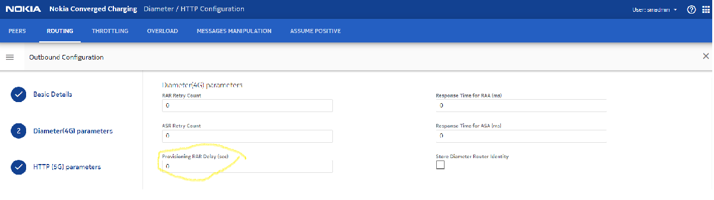
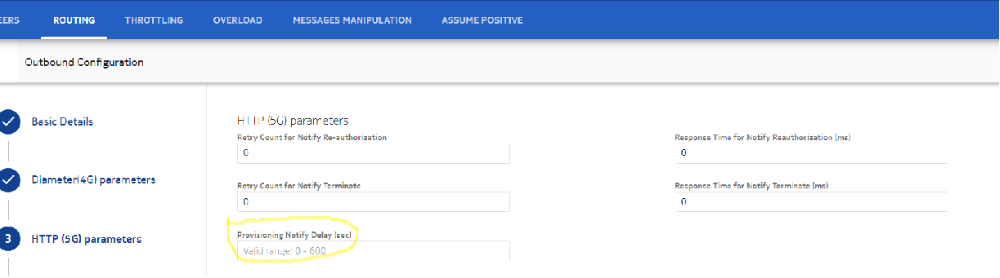

Configuration
This feature can be enabled from the SM GUI following the given steps:
-
Navigate to the Diameter / HTTP Configuration and browse to ROUTING.
-
Select Outbound Configuration from the hamburger menu (☰) and select + to create a new outbound configuration.
-
-
For 4G outbound configuration:
The Provisioning RAR Delay can have a value that ranges between 0 to 600 in seconds. Note:
Note: -
For 5G outbound configuration:
The Provisioning RAR Delay can have a value that ranges between 0 to 600 in seconds.Note:
-
-
Save the configuration.
Note: